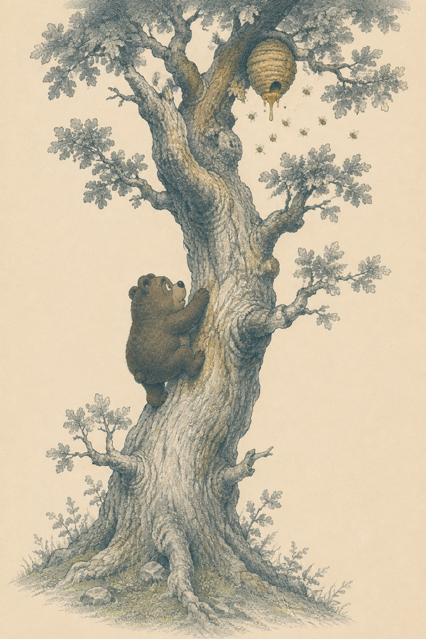
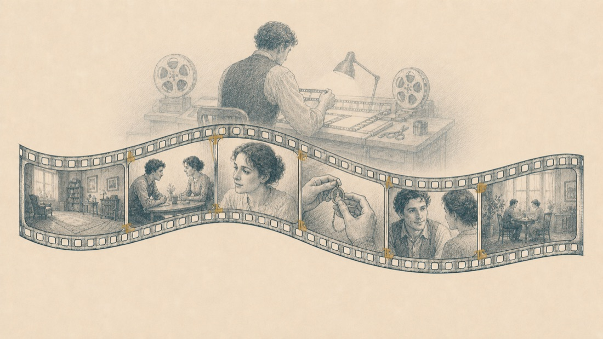
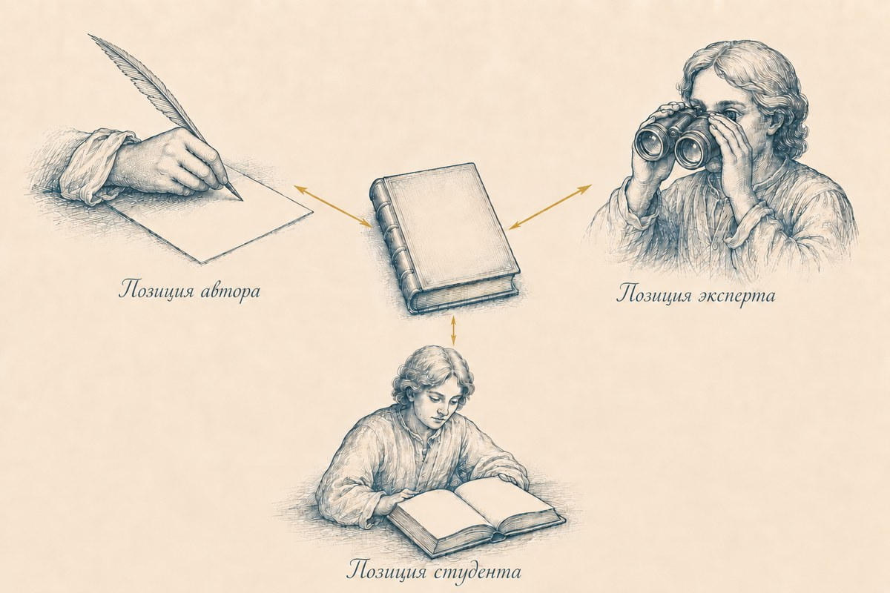
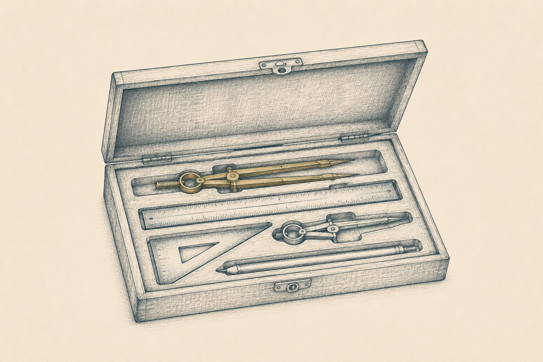
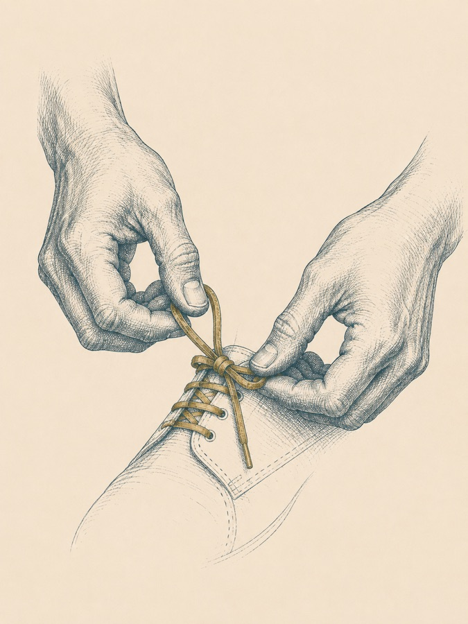
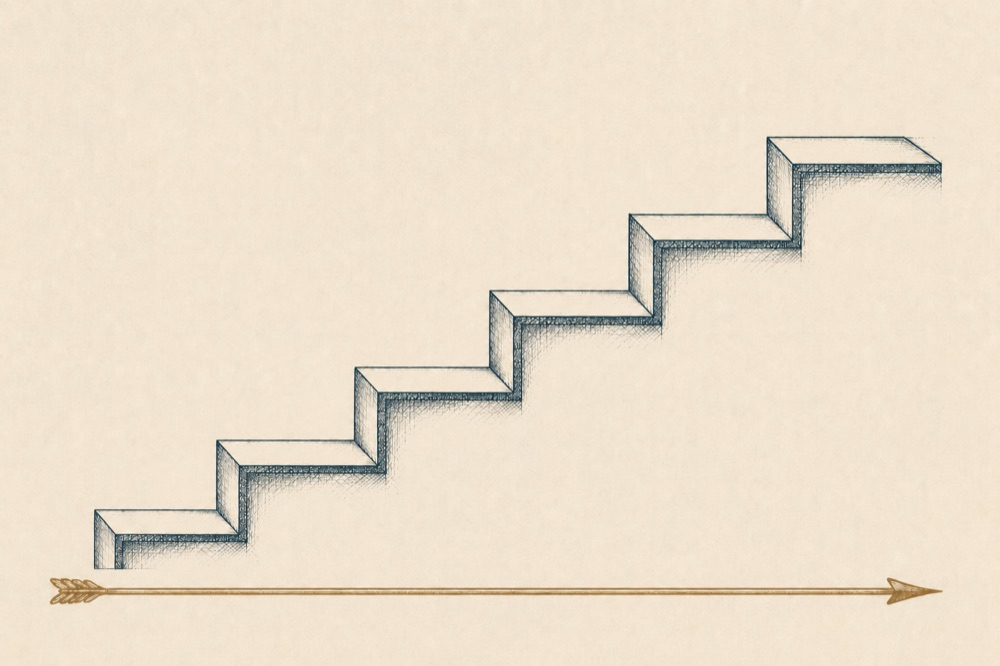
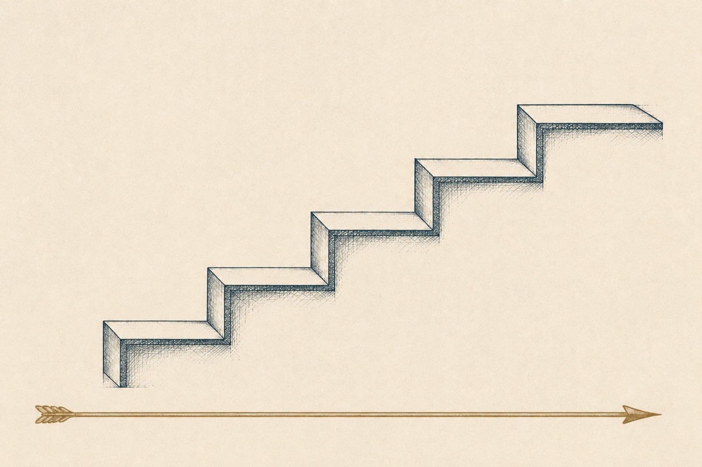

Концепт программы: какую историю мы рассказываем студенту?
✦ ✦ ✦
01Концепт программы
Ну что ж, вот мы добрались до темы, которая вызывает больше всего сложностей у методологов, экспертов и тренеров, потому что требует разворота в мышлении. Однако, когда этот разворот произойдёт, твоя жизнь в профессиональном смысле разделится на до и после: ты будешь совершенно иначе подходить к процессу обучения, как таковому, и это будет коренным образом отличать тебя от огромного числа коллег.
Но не буду тратить твоё время на излишние предисловия. Тема нашего разговора сейчас — концепт программы.
Итак, вспомни, что мы уже сделали. Мы определили цель, портрет студента и ожидаемый результат — по сути, ответы на эти вопросы, метафорически говоря, помогли нам расчертить белый лист бумаги, наметив там важные опорные точки.
И вот теперь мы будем рисовать для будущих студентов дорогу из точки А в точку Б. Честно предупрежу: эта идея особенно сильно «ломает мозг» тем из нас, кто привык создавать программы, отталкиваясь от вопросов «что я хочу дать» и «каким инструментам обучить».
Мы сейчас будем учиться думать принципиально иначе: как будет устроен путь студента из его точки А в его точку Б. Не наш путь. Путь студента.
Определение
Концепт программы — это история изменений студента. История о том, как он, преодолевая трудности и барьеры, обретает новые знания и навыки, преобразовывая свою картину мира.
02Винни-Пух
История, а не список тем
✦

Заметьте: не список тем, не перечень инструментов, не «программа в двенадцати уроках». История. И как у всякой хорошей истории, у неё есть главный герой — наш ученик. Чтобы сразу же «приземлить» эту пока ещё абстрактную идею, я предложу тебе вспомнить детскую книгу про Винни-Пуха. Да-да, ту самую книгу Алана Милна в пересказе Бориса Заходера.
Если ты откроешь оглавление этой книги, то увидишь следующее:
Глава первая, в которой мы знакомимся с Винни-Пухом и несколькими пчёлами.
Глава вторая, в которой Винни-Пух пошёл в гости, а попал в безвыходное положение.
Глава третья, в которой Пух и Пятачок отправились на охоту и чуть-чуть не поймали Буку.
Глава четвёртая, в которой Иа-Иа теряет хвост, а Пух находит
…и так далее.
Что мы можем заметить в структуре этого оглавления?
Во-первых, Герой — тот, кто действует (Винни-Пух или Пятачок).
Во-вторых, Действие — то, что герой совершает: идёт в гости, попадает в безвыходное положение, находит хвост.
В-третьих, уже само оглавление выстраивается в логически связанное, последовательное повествование, так что История легко складывается у нас в сознании, хотя книгу мы ещё не читали.
Так вот: это оглавление в книге про Винни-Пуха — и есть образец концепта обучающей программы.
Смотри: у нас есть герой — это наш с тобой студент. У нас есть история его движения из точки А, где он ещё не умеет (вести переговоры, готовить борщ, вязать шарфы, продавать свои услуги онлайн и т. д.) в точку Б, где уже научился. Наша задача сейчас — расписать процесс его обучения на курсе, как последовательную историю, в которой ему (студенту) будет на каждом этапе ясно, где он находится, чему учиться, откуда и куда движется, зачем ему это и т. д.

Ещё одна подходящая метафора для понимания концепта программы — это синопсис фильма или сериала. Помнишь, что такое синопсис? Это краткое (на 1–2 страницы) описание сюжета будущей картины, в котором раскрывается завязка, развитие событий, кульминация и финал.
Зафиксируем
Концепт — это и есть синопсис нашей обучающей программы, который на каждом этапе помогает студенту получить ясное понимание: «Где я? Чему я здесь учусь? Зачем мне это? Как это связано с моей жизнью? Откуда и куда двигаюсь?»1
Несколько примеров концепта программы
Самопрезентация за 60 секунд
Глава 1, в которой герой понимает, почему после встреч о нём не помнят, — и решает это изменить.
Глава 2, в которой он находит свою сильную историю и точку, где она пересекается с задачами слушателя.
Глава 3, в которой он собирает рассказ о себе в 60 секунд по модели.
Глава 4, в которой он репетирует на камеру и получает обратную связь.
Глава 5, в которой он уверенно представляется на реальной встрече — и получает приглашение к разговору.
Игра на фортепиано
Глава 1, в которой герой впервые садится за инструмент и убеждается: руки слушаются лучше, чем он думал.
Глава 2, в которой он разучивает первую пьесу двумя руками.
Глава 3, в которой он учится читать простые ноты и играть без подсказок.
Глава 4, в которой у него появляется мини-репертуар из трёх пьес.
Глава 5, в которой он играет для близких на первом домашнем концерте.
Приготовление борща
Глава 1, в которой герой перестаёт бояться «сложного супа» и собирает правильные продукты.
Глава 2, в которой он осваивает главный секрет — прозрачный наваристый бульон.
Глава 3, в которой он учится зажарке и балансу вкуса: кислое, сладкое, солёное.
Глава 4, в которой он варит свой первый борщ от начала до конца по таймингу.
Глава 5, в которой он угощает семью и записывает свой фирменный рецепт.
Продажи для экспертов
Глава 1, в которой герой понимает, что продавать — не значит «впаривать», и перестаёт бояться этого слова.
Глава 2, в которой он учится слышать настоящую задачу клиента за его словами.
Глава 3, в которой он собирает своё предложение на языке пользы клиента.
Глава 4, в которой он проводит первую спокойную продающую беседу по структуре.
Глава 5, в которой он получает первое «да» — и план следующих шагов.
1 Если ты вспомнишь наш разговор о принципах андрагогики, то тебе будет очень легко понять, почему именно на эти вопросы должен отвечать концепт программы.
Раздел 10
Модель TOTE: строительный блок для создания изменений
✦ ✦ ✦
01Модель TOTE
Хорошо, скажете вы, история — это красиво. Но как превратить историю из пересказа в образовательный процесс? Для этого нам нужен инструмент. И в качестве такого инструмента мы используем модель TOTE (произносится как «тОут»), которую в 1960 году описали психологи Карл Прибрам, Джон Миллер и Юджин Галантер1. Модель TOTE (или T.O.T.E.) описывает петлю обратной связи, лежащую в основе человеческого (и не только) поведения. Как ты, вероятно, догадался, название TOTE — это аббревиатура, и расшифровывается она следующим образом:
Test 1Тест 1→OperationОперация→Test 2Тест 2→ExitВыход✦
Как многие модели в фундаментальной науке, TOTE применима к описанию и анализу самого широкого спектра вариантов поведения (не только человеческого, но и животного), и чтобы не утонуть в абстракциях, я предлагаю разбирать значение каждого шага сразу же на примере процесса обучения.
Возьмём крупный план (макро-уровень структуры обучения). По сути — всё прохождение студентом нашей программы — это и есть один большой TOTE, в котором:
Шаг 1
Test 1 (Тест 1) — вход
Студент приходит на программу, не умея делать самопрезентацию. Он фиксирует для себя несоответствие между тем, какого качества его самопрезентация прямо сейчас и тем, какого качества он хочет достичь. Фактически, T1 — это точка фиксации цели и принятия решения начинать действовать.
Шаг 2
Operation (Операция)
На макро-уровне — все действия студента в рамках обучения, направленные на достижение цели; то есть — на приобретение навыка делать самопрезентацию.
Шаг 3
Test 2 (Тест 2)
Проверка: соответствует ли теперь достигнутое состояние тому, которое было запланировано? «Получилось — не получилось?» Именно здесь проявляется важность наличия критериев результата, потому что именно по этим критериям и происходит сверка.
То есть: если цель была — освоить самопрезентацию в формате «лифт» по одному шаблону, наизусть и без запинок, то ровно по этим критериям необходимо и проводить сравнение ожидаемого и полученного2.
Шаг 4
Exit (Выход)
При хорошем раскладе, Exit — это точка, когда мы фиксируем успешное достижение результата, ставим точку в обучении, поздравляем друг друга, выдаём дипломы или сертификаты, празднуем.
Менее приятный вариант: студент может обнаружить, например, что поставленная цель для него не стоит вкладываемых усилий, махнуть рукой и закрыть для себя обучение на программе.
Надеюсь, что на макро-уровне с TOTE всё ясно. Она достаточно легко накладывается на чей-угодно личный опыт, поскольку отражает глубинную структуру абсолютно любого поведения. На TOTE можно разложить решение абсолютно любых жизненных задач: от чистки зубов по утрам и похудения до переезда в другую страну.
1 Впервые модель была описана в книге «Программы и структура поведения: подробное описание модели T — O — T — E».
2 Это очень тонкий и важный момент: когда мы дойдём до работы с мотивацией и сложным поведением участников, мы увидим, какую колоссальную роль играет критериальная ясность описания целей/ожидаемых результатов обучения и процесс сверки Т1 и Т2 в управлении состоянием, вовлечённостью и эмоциями студентов.
02Малый TOTE
Наводим резкость: TOTE внутри главы
✦
Что мы делаем дальше: наведём резкость и посмотрим на одну из «глав» в концепте того же курса по самопрезентации. Внутри неё живёт свой, малый TOTE.
Тема 1, в которой мы выясняем цель и смысл самопрезентации.
Тест 1: студент не знает, о чём говорить в самопрезентации, поскольку ему неясно, в чём её функция и на решение каких задач она должна быть направлена.
Операция: он выясняет, что смысл самопрезентации — дать аудитории понимание: «кто я?», «какие задачи решаю?», «чем могу быть полезен?» и создать желание продолжить диалог. После этого студент письменно отвечает на три этих вопроса.
Тест 2: у студента написан черновой текст его будущей самопрезентации. Он знает, для чего нужна самопрезентация и знает, о чём говорить.
Exit: сверка — «да, здесь всё получилось, можно идти дальше». Студент готов к записи на видео первой версии своей самопрезентации.
Вуаля! Надеюсь, теперь ты видишь, что TOTE — масштабируемая модель, которая может описывать как весь твой курс целиком, так и отдельный маленький цикл обучения; более того — вся программа целиком представляет собой не что иное, как последовательность «тоутов». Из них, как из кирпичиков, мы и будем собирать «здание» твоего будущего курса.
03Про Exit
Лирическое отступление о важности шага «Exit»
✦
По роду тренерской деятельности я не раз проводил стратегические сессии для бизнес-команд. И часто одной из самых болезненных тем было истощение или даже выгорание ключевых сотрудников. Я начинал разбираться, расспрашивать о том, как устроены рабочие процессы…
И вскоре выяснялось, что команда уже больше 1,5 лет фигачит по-чёрному, добилась уже многих побед… и за всё это время ни разу не провела ни одного корпоратива. «Ещё чего! — говорил лидер, — Рано расслабляться! Это ещё не те результаты, которые стоило бы отмечать!» Знакомый сюжет, верно? У многих из нас были родители и учителя, рассуждавшие именно так. И вроде бы — такой героический подход, так много в нём привлекательной самоотверженности, готовности гореть своим делом…
Да-да. Сначала гореть, а потом выгореть до чёрных углей. Почему?
Давай присмотримся внимательно к решению бизнес-задач через призму модели TOTE. Вот, скажем, открылся один важный TOTE — когда нам нужно привлечь инвестиции. Привлекли. Казалось бы — можно TOTE закрыть: отметить, зафиксировать успех, поздравить друг друга… Но нет, говорит лидер команды, нельзя расслабляться, теперь нам нужно запустить продукт А. Окей, говорит команда, запускаем продукт А… И это следующий TOTE. Запустили. Ну? Теперь-то отметим? Молодцы же? Нет, хмурится лидер, рано радоваться, нужно выйти на новый рынок! Окееей, говорит команда уже кряхтя, бежим дальше, выходим на новый рынок… Но теперь-то…? Нет, краснеет от напряжения лидер, нужно повышать показатели продаж… И новый TOTE. И снова команда впрягается и бежит к новой цели…
И поскольку весь рабочий процесс превращается в сплошную цепочку незакрытых TOTE, выгорание ключевых сотрудников или всей команды целиком — это вопрос не «если», а «когда».
Почему? Потому что живая система не может существовать в режиме непрерывной мобилизации. Ей нужно в какой-то момент разгружаться, фиксировать точку финала, причём, желательно — финала успешного3.
Так вот, ценность корпоратива заключается ровно в том, что это и есть шаг Exit. В этот момент система понимает: задача решена успешно! Ура, цель достигнута! Мы выдыхаем, сбрасываем накопленное напряжение, обмениваемся обратной связью, поздравляем себя и друг друга, восполняем энергозатраты, говорим друг другу о том, какие мы крутые и как мы друг друга ценим. Именно здесь мы набираем ресурсы для решения новой задачи, для марш-броска к новой цели.
Шаг Exit обеспечивает закрытие одного TOTE и переход к следующему, он необходим для здорового развития как бизнес-систем, так и систем образовательных.
Поэтому, пожалуйста, имей в виду, что каждый TOTE твоей программы непременно должен заканчиваться «Exit-ом», на котором студент получит обратную связь, зафиксирует достигнутый успех, обопрётся на него обеими ногами и приготовится сделать следующий шаг4.
3 Но даже если и не очень успешного — помнишь древнюю шутку «лучше ужасный конец, чем ужас без конца». Она ровно про TOTE без Exit-а.
4 Мы ещё обязательно коснёмся важности Exit, когда будем обсуждать тему мотивации студентов и управление ею.
04Практика
Рабочая тетрадь
Собери свой первый концепт из TOTE-ов
1. Возьми простую, понятную тебе тему — например, приготовление яичницы или завязывание шнурков. Опиши концепт обучения этому навыку в 2–3 «главах».
2. Для каждой «главы» опиши: Героя (студента), Действие, которое он совершает, и Рубеж, который он преодолевает.
3. Встрой в каждую «главу» модель TOTE: Тест 1 — Операция — Тест 2 — Exit.
4. Теперь примени ту же логику к своему собственному проекту: опиши первые 1–2 «главы» (TOTE-а) своего курса.
5. Отложи запись на день, затем перечитай свежим взглядом и проведи самопроверку: насколько логична и последовательна твоя история? Нет ли «дыр» и логических скачков между шагами? Насколько понятен путь студента?
Ответы сохраняются в этом браузере автоматически. Все задания книги собраны в рабочей тетради — её можно открыть отдельно, заполнить целиком и скачать одним PDF.
Не гонись за красотой формулировок — сейчас важно, чтобы цепочка сцепилась. Красоту наведём позже.
Раздел 11
Три позиции описания
✦ ✦ ✦
01Три позиции
Мы уже неплохо продвинулись в вопросе о том, как проектировать программу обучения: выяснили, что концепт программы — это история движения нашего студента из точки А в точку Б; история с ним в главной роли, которую мы ему же и рассказываем. Ещё мы познакомились с универсальной моделью TOTE, которая описывает структуру любого поведения, и которую крайне полезно использовать в качестве «строительного материала» при проектировании учебной программы.
Каким будет наш следующий шаг?
И вот тебе вопрос на миллион: как сделать так, чтобы этот концепт программы был действительно про студента, а не про «второго себя»? Давай признаем честно: авторы курсов сплошь и рядом строят программу для человека, подозрительно похожего на них самих (с их бэкграундом, с их любовью к теме, их же выносливостью). К чему приводят такие допущения — нужно говорить? Правильно, к тотальной потере контакта с реальным учеником (его миром, жизненными обстоятельствами, языком, целями и задачами), что в свою очередь приводит к тому, что ученик делает ручкой и уходит с курса.
И так понятно: «Если тебе, уважаемый автор, так хорошо общаться с самим собой, то зачем тебе я?»
Итак, вот задача, которую мы будем решать в этой главе: как тебе, будучи автором продукта, держать в голове фигуру студента в процессе создания программы курса и писать её именно для него, а не для себя?
Для ответа на этот вопрос я хочу предложить тебе инструмент, который существенным образом расширяет картину восприятия действительности. Называется он — трёхпозиционная модель описания, и смысл его заключается в том, чтобы научиться смотреть на образовательный продукт с трёх разных позиций, последовательно переключаясь между ними.1

Позиция 1
«Я — Автор»
Подозреваю, что это позиция тебе хорошо знакома: я, мой продукт, мои ценности, мои убеждения; всё, что я хочу передать; всё, что мне так дорого в моей профессиональной области; всё, что люблю и считаю важным. И конечно же: всё, что у меня болит относительно темы; всё, что меня мотивирует и подбрасывает по утрам из кровати, заставляя говорить об этом в блоге или с клиентами. В общем, из этой позиции мы можем годами не выходить — она тёплая, уютная, обустроенная и очень понятная. И вообще — откуда бы взялся проект/продукт/курс, если бы не горящее внутри тебя стремление Автора высказаться! Да?
Позиция 2
«Мой Студент»
Вот тут уже нам предстоит совершить волевое усилие, чтобы переключить «роль», перенастроить восприятие и посмотреть глазами студента на свой продукт. Прожить «из его шкуры», или, говоря известной индейской метафорой, — «пройти милю в его мокасинах». Иными словами — тебе нужно поставить себя на место студента, напрячь всё своё воображение, чтоб погрузить себя в его жизненные обстоятельства и ответить на вопрос: каково это — учиться на твоей программе, будучи им. Как студент будет проживать те или иные стыковки программы, как будет ощущать себя на вебинаре или при просмотре уроков, как справляться с домашними заданиями, имея определённый рабочий график, мужей/детей/собак, командировки, усталость и т. д. Если проделать эту операцию переключения достаточно честно, тебе могут открыться бесценные догадки — на каком этапе у студента случится информационный перегруз, где обрушится мотивация, а где, напротив — произойдёт важный инсайт, требующий времени для переваривания.
Позиция 3
«Эксперт-Наблюдатель»
И, наконец, третья, очень важная роль, необходимая для того, чтобы проанализировать те откровения, которые принесёт тебе 2 позиция. 3 позиция — это взгляд нейтрального эксперта, методолога-наблюдателя, который не имеет никакой личной привязанности ни к одной из твоих любимых тем. Ему в хорошем смысле наплевать — останется во втором модуле такая дорогая твоему авторскому сердцу лекция или нет. Он смотрит на структуру целиком и его задача — находить конструктивные решения, которые помогут усилить программу с учётом особенностей портрета студента.
1 …и как многие инструменты работы с мышлением — работают далеко не только в контексте обучения, а ещё много где. В контексте коммуникации, например. В общем — пользуйся на здоровье.
02Разбор проекта
Трёхпозиционная система описания в деле: разбор реального проекта
✦
Так. По отдельности, вроде бы, роли понятны. Но как работает модель целиком? Чтобы с этим разобраться, я предложу тебе рассмотреть практику трёхпозиционного описания на примере конкретного проекта.
Итак, познакомлю тебя с Кристиной, фитнес-тренером. У неё проект женского клуба с ежемесячной подпиской. На текущий момент идея выглядит следующим образом: три групповых тренировки в неделю, длительностью по 1 часу, в Zoom. Кроме тренировок — два записанных подкаста в закрытом телеграм-канале с рекомендациями. Неделя 1 — мягкие коррекционные техники для плавного входа в режим, неделя 2 — повышение активности, недели 3–4 — интенсивный функциональный тренинг, работа с собственным весом.
Глядя на проект из своей первой позиции (Автора), Кристина довольна тем, как клуб спланирован и продуман, она готова его запускать.
Теперь мы попросим Кристину подробно описать портрет потенциальной участницы её клуба. Благо, у Кристины приличный бэкграунд индивидуальной работы, она изначально довольно ясно понимала, для кого создаёт клуб, поэтому это несложный для неё вопрос.
Итак, женщина 35+, с гибким графиком работы, у которой уже было несколько попыток внедрить спорт в свою жизнь на постоянной основе, но все они заканчивались срывами. К текущему моменту потенциальная участница уже очень устала «терять мотивацию и начинать сначала», у неё снова был большой перерыв в занятиях из-за стресса на работе.
Складывается портрет? Вполне. И вот мы попросим Кристину погрузиться в роль этой женщины: попросим телесно, эмоционально на некоторое время стать ею2.
И следующим шагом зададим Кристине вопрос: что она чувствует, когда из позиции своей ученицы смотрит на проект клуба? Каково ей? Что ей нравится? Что даётся легко? А где, возможно, возникают трудности?
И вот начинается интересное: в какой-то момент Кристина говорит:
«Сейчас я чётко чувствую, что мне, как участнице, очень важен деликатный, бережный подход, особенно на самом старте. Мне очень легко махнуть рукой на тренировки и на себя, мне очень легко решить: „ну вот, опять не получилось“. И поэтому мне нужно „личное касание“ от тренера, которое поможет войти в режим, плавно и без насилия… И ещё, конечно, важно, чтобы участие в клубе не отнимало много времени; я совершенно точно не готова ни к каким домашним заданиям. Ещё очень хочется разнообразия, потому что если будут одни и те же приседания — скорее всего я в какой-то момент не смогу уговорить себя прийти на очередную тренировку. И, да, мне важно, чтобы тренер давал комментарии и объяснения, почему мы делаем то или иное упражнение: так я чувствую, что у меня больше готовности включаться и выполнять».
Вау! Круто же? Лицо Кристины сильно меняется при переходе от 2 позиции (участницы) к третьей позиции (нейтрального эксперта-методолога). Надеюсь, ты тоже замечаешь, как много деталей добавляет взгляд со второй позиции к первичному описанию проекта, которое было у Кристины.
И вот ровно здесь нам очень важно переключиться в роль Эксперта-методолога (3 позиция) и попросить его дать рекомендации Автору (1 позиция) — что можно добавить, усилить, изменить на основе обратной связи Участницы (2 позиция).
Важный комментарий: понятно ли, почему здесь нужна именно третья позиция? Почему с обратной связью от Участницы мы идём к нейтральному Эксперту, а не к Автору? Потому что у Автора есть личная привязанность к программе, эмоциональная связь с проектом, как со своим детищем.
И, значит, эта эмоциональная вовлечённость может сильно помешать Автору услышать и конструктивно принять пожелания и потребности Участницы: он может начать защищать свои задумки, обесценивать запросы потенциальной ученицы и, что особенно важно — эмоциональная, личная подключка к собственному проекту может сильно сужать обзор и мешать увидеть вполне эффективные, интересные, действенные решения, которые позволяют учесть пожелания потенциальных участников, не теряя при этом духа и первоначального замысла проекта3!
Итак, наша Кристина переходит из 2 позиции (Участница) в 3 позицию (Эксперт-методолог). Перед тем, как посмотреть на проект и проанализировать полученную от 2 позиции обратную связь, она проверяет, что действительно смотрит на проект клуба со стороны, глазами нейтрального специалиста, у которого нет ни малейшей личной заинтересованности в том, как именно клуб будет организован — только трезвый профессиональный аналитический взгляд.
Из 3 позиции Кристине пришли в голову следующие рекомендации:
Рекомендация 1
Добавить в структуру клуба трекер
Очень простой, чтобы не отнимал времени для заполнения. Например, два вопроса в конце тренировки: «откалибруй своё состояние по уровню энергии на входе и на выходе по шкале 1–10» (покажет динамику уровня энергии на протяжении месяца) и «что у тебя сегодня получилось?» (чтобы сформировать фокус на успехе, а не на неудаче).
Рекомендация 2
Смягчить старт
Здесь мы учитываем страх участницы «бросить тренировки в десятый раз». Первые две недели должны быть очень мягкими и постепенными. Их цель — не ставить рекорды, а помочь человеку сделать спорт приятной, желанной рутиной и увидеть: «у меня получается приходить и стабильно уделять внимание своему телу». Функциональный тренинг придержим до того момента, когда участницы втянутся и почувствуют, что у них достаточно сил, чтобы осваивать более сложную программу.
И, пройдя по 3 позициям, самый важный, финальный шаг — снова надеть на себя шапку Автора. И вот, что говорит Кристина, вернувшись в 1 позицию:
«Я увидела, что моё внутреннее желание дать „всё, сразу и побольше-побольше“ могло сыграть во вред проекту и участницам. Теперь я вижу: двигаться нужно медленнее, и вообще учитывать темп, опираясь на реальные возможности и состояние тех, кто занимается. Трекер действительно улучшит контакт и облегчит сбор обратной связи. А контент подкастов можно адаптировать под живые запросы группы — например, если через две недели участницы спросят про принципы питания — мне будет, что ответить. И тогда проект станет действительно „про людей“».
Ключевая мысль
Итого! Навык переключаться между тремя позициями восприятия даёт объёмный взгляд на свой проект, позволяет сместить фокус с себя-Автора на студента и его опыт, и учесть очень многие подводные камни продукта ещё до его старта. Магия, скажешь ты? Ничего подобного — чистая технология!
2 На курсе «Методология Fundamentum» есть отдельный видео-урок, посвящённый практике трёхпозиционного описания. Там мы с моей ассистенткой в режиме реального времени показываем, как переходить из позиции в позицию, на что при этом важно обращать внимание и т. д. Поэтому, если хочешь увидеть эту технику во всех деталях — добро пожаловать на курс.
3 Клянусь, я десятки раз встречал авторов курсов, преподавателей, которые с пеной у рта начинали винить студентов в лени, тупости, нежелании глубоко погружаться в их бесценный предмет. Одна беда — эти люди совершенно не учитывали, что у студентов помимо их «святой дисциплины» есть ещё своя жизнь, работа, дети, собаки, переезды, хобби и т. д. Одна из задач этой книги — помочь авторам выглянуть за пределы своих башен из слоновой кости и двинуться навстречу тем, для кого они, собственно, и создают свои продукты.
03Практика
Рабочая тетрадь
Пройди три позиции на своём проекте
1. Возьми свой собственный образовательный проект или его идею. Выполнять практику можно, физически перемещаясь в пространстве — три стула, три угла комнаты — или мысленно.
2. Шаг 1 (Позиция 1): опиши свой продукт с позиции «Я — Автор». Какова его структура, длительность, какие темы и форматы ты считаешь важными?
3. Шаг 2 (Позиция 2): вживись в роль своего студента. Опиши его бэкграунд, страхи, потребности, график. Что ему важно получить от курса? Что его точно оттолкнёт?
4. Шаг 3 (Позиция 3): займи позицию «Эксперта-Наблюдателя». Проанализируй Позиции 1 и 2. Какие рекомендации по изменению или усилению программы ты можешь дать Автору, чтобы она лучше отвечала запросам Студента?
5. Вернись в Позицию 1 и зафиксируй инсайты, которые ты получил.
Ответы сохраняются в этом браузере автоматически. Все задания книги собраны в рабочей тетради — её можно открыть отдельно, заполнить целиком и скачать одним PDF.
Если в третьей позиции тебе стало немного неловко за первую — ты всё сделал правильно. Именно так и рождается программа про студента.
Раздел 12
Простые и комплексные навыки
✦ ✦ ✦
01Простые и комплексные

Итак, мы уже понимаем с тобой, что такое концепт программы, как он превращается в пошаговое навыковое обучение благодаря модели TOTE; наконец, у нас с тобой есть трёхпозиционная модель описания для самопроверки, насколько наша программа — про студентов, про их потребности, жизненные особенности и реальные возможности. Мы уже почти укомплектовали «чемоданчик с инструментами» для сборки твоего проекта. Чего нам не хватает?
Не хватает выяснить — как происходит формирование навыков и какими вообще навыки бывают?

Давай я начну с предельно дурацкого вопроса: чем навык писать картины маслом отличается от навыка завязывать шнурки?
Если ты решишь ответить: «Наличием художественного таланта», — я буду спорить. Врождённые особенности действительно могут влиять на скорость обучения, лёгкость освоения отдельных действий и уровень мастерства, которого человек в итоге достигнет. Но они не разделяют человечество на две породы: тех, кого можно учить живописи, и тех, кто от природы безнадёжен.
Техническим компонентам живописи — работе с цветом, композицией, перспективой, материалами, светом и формой — можно обучать более-менее любого здорового человека. Другой вопрос, какой результат мы будем считать достаточным, сколько времени человек готов потратить и насколько далеко решит зайти.
Теперь вернёмся к моему нелепому вопросу: в чём структурное различие между навыком писать картины и навыком завязывать шнурки?
Очевидно, они различаются по сложности. Чтобы завязать шнурки, нужно выполнить сравнительно небольшое количество действий в довольно предсказуемой ситуации и получить вполне ясный, чётко измеримый результат: узел крепко держится, шнурки не развязываются, можно ходить без угрозы падения.
Живопись требует координации множества поднавыков. Художник должен видеть пропорции, строить композицию, смешивать цвета, владеть кистью, управлять тоном и светом, учитывать свойства материала, замечать возникающий эффект и постоянно принимать самостоятельные неочевидные решения. Причём — единственного правильного результата здесь нет, поскольку критерии качества во многом зависят от замысла автора.
Поэтому скажем так: навыки различаются степенью сложности и внутренним устройством. А раз так — давай очень условно разделим навыки на простые и комплексные1.
Относительно простой навык на выбранном уровне рассмотрения можно представить как одну основную петлю действия: мы сравниваем текущее состояние с желаемым, что-то делаем, снова проверяем результат и завершаем действие, когда цель достигнута. Понимаешь, что я только что сделал? Конечно, я описал навык при помощи уже знакомого нам инструмента под названием TOTE.
Например:
пятно на столе осталось — протираем — проверяем — пятно исчезло;
вода не дошла до отметки — наливаем — проверяем уровень — останавливаемся;
крышка закрыта неплотно — закручиваем — проверяем — банка закрыта;
шнурки развязаны — выполняем привычную последовательность — проверяем узел — идём по своим делам.
Разумеется, любой из этих навыков тоже можно разобрать на более мелкие действия. Для маленького ребёнка завязывание шнурков вообще может оказаться полноценной трансформационной образовательной программой с прохождением внутреннего кризиса и т. д. Поэтому «простой» здесь не означает «объективно состоящий ровно из одного TOTE». Это означает: на выбранном уровне анализа нам не требуется отдельно обучать множеству самостоятельных поднавыков.
Простой навык
Навык, который на выбранном уровне рассмотрения можно описать одной доминирующей петлёй TOTE: у действия есть локальная цель, понятная операция и достаточно ясный критерий завершения.
Комплексный навык
Система взаимосвязанных поднавыков, каждый из которых можно описать собственной петлёй TOTE. Эти петли могут включаться последовательно, работать параллельно, повторяться, ветвиться и подчиняться более общей цели.
К комплексным навыкам относятся, например:
ведение переговоров;
управление автомобилем или мотоциклом;
приготовление сложного блюда;
игра на музыкальном инструменте;
создание образовательной программы;
написание картины;
управление командой;
проведение публичного выступления.
1 Это разделение совершенно не претендует на научную строгость, скорее — это рабочая модель, которая может помочь при проектировании программы, но относиться к ней нужно с известным скепсисом.
02Декомпозиция
Декомпозиция навыка
✦
Во время переговоров человек одновременно слушает собеседника, анализирует его позицию, управляет собственным состоянием, формулирует вопросы, проверяет гипотезы, замечает изменения в реакции, предлагает варианты и корректирует стратегию. Весь этот сложный винегрет действий требует от нас, как методологов, способности раскрыть внутреннее устройство такого комплексного навыка: выделить составляющие его поднавыки, определить связи между ними и понять, в какой последовательности их осваивать.
Этот процесс называется декомпозицией навыка.
Важно
Декомпозиция — это не обязательно превращение сложного навыка в одну длинную линейную цепочку. В реальном действии человек может возвращаться к предыдущим шагам, выполнять несколько процессов одновременно или выбирать следующий ход в зависимости от ситуации.
Поэтому результат декомпозиции больше похож не на железнодорожный состав, где один вагон следует строго за другим, а на карту, которая помогает ответить на вопросы:
какие поднавыки включены в комплексный навык;
какие из них являются базовыми;
какие можно осваивать только после предыдущих;
какие работают одновременно (параллельно);
где точки, в которых необходимо научиться принимать самостоятельные решения;
по каким признакам человек поймёт, что действует успешно;
как должен действовать, если результат его не устраивает.
А теперь — про грабли, на которые наступает огромное количество авторов образовательных программ. Они расписывают программу как список тем, а потом удивляются, почему студент всё прослушал-просмотрел-сертификат получил, но действовать так и не научился.
Например: открываем рандомную программу обучения переговорам и читаем (я не выдумываю, видел такие не раз) —
Тема 1. «Чикагская школа переговоров».
Тема 2. «Кремлёвская школа переговоров».
Тема 3. Типология переговоров.
Тема 4. Стратегии поведения в конфликте.
…и так далее в том же духе. В финале модуля задание: проведите переговоры, используя изученные модели.
Какие именно действия и в какой последовательности должен совершать студент? На что именно обращать внимание и на каком этапе? В какой последовательности какие конкретно техники отработать? Как понять, что модель применена корректно (или некорректно)? Что делать, если собеседник реагирует не так, как написано в методичке?
В такой программе мы можем быть уверенными, что студент ознакомился с теорией переговорного процесса, но с точки зрения навыка вести переговоры он даже с места не сдвинулся.
Навыковое проектирование
При навыковом проектировании программу имеет смысл строить иначе. Сначала мы раскладываем комплексный навык «ведение переговоров» на более простые поднавыки (хотя бы приблизительно, навскидку):
Собрать и проверить информацию о второй стороне.
Сформулировать желаемый результат, минимально приемлемый результат и границы уступок.
Предположить цели, интересы и ограничения оппонента.
Установить контакт и договориться о рамке предстоящего раунда переговоров.
Задавать вопросы и извлекать недостающую информацию.
Отличать заявленную позицию от стоящих за ней интересов.
Формулировать предложение с учётом интересов обеих сторон.
Замечать реакцию собеседника и корректировать способ своей коммуникации с ним.
Работать с возражениями, давлением и манипуляциями.
Проверять понимание и фиксировать договорённости.
Каждый из этих поднавыков можно описать отдельным TOTE, превратить в учебную задачу, дать студенту возможность потренироваться, получить обратную связь и совершить новую попытку2. Чтоб тебе была понятна степень необходимой дотошности в этом вопросе, приведу ещё один пример. Если мы добиваемся формирования комплексного навыка, нам недостаточно просто рассказать человеку о важности подготовки к переговорам. Нам нужно дать ему возможность провести эту подготовку самостоятельно, используя, скажем, определённые критерии качества:
какую информацию необходимо собрать;
где её искать;
как отличать факты от фантазий и галлюцинаций;
как понять, что информации уже достаточно;
какие пробелы могут повлиять на результат коммуникации.
Пока наш студент не получил такого опыта, мы не можем утверждать, что научили его готовиться к переговорам, и именно здесь, в точке подготовки, у нас остаётся слабое, слепое пятно, где поверхностное понимание может быть и есть, а навыка нет. А значит, построение дальнейшей целостной переговорной практики оказывается под угрозой…
Фух. Самое время проветрить в комнате, глубоко подышать и выпить воды.
Резюмируя эту действительно важную часть разговора: мы добавили в наш «чемоданчик с инструментами» ещё одну очень важную технологию, которую самое время применить к разработке твоей авторской программы — это декомпозиция навыка. Впереди тебя ждёт практическое задание: не спеши его скорее закончить и перевернуть страницу. Именно здесь особенно важную роль играет не скорость, а твои внимательность, требовательность к себе и подлинно инженерный взгляд.
2 Я как будто вижу, как твои глаза округляются от ужаса. Выдыхай: я пока просто мелкими штрихами набрасываю — какой фронт работ открывается после того, как мы расписали комплексный навык на поднавыки. Как именно превращать отдельный TOTE в конкретный обучающий сценарий с практикой и обратной связью, мы непременно поговорим отдельно и особо. Не волнуйся!
03Практика
Рабочая тетрадь
Разложи комплексный навык на простые
1. Возьми любой комплексный навык, которым ты уже владеешь: езда на велосипеде, приготовление кофе, отжимания от пола.
2. Разложи его на цепочку условно простых навыков (TOTE-ов). Для ориентира: отжимания — комплексный навык, и внутри него живут TOTE-ы — положение поясницы, ширина рук, постановка локтей, переход с колен на вытянутые ноги и так далее.
3. Проверь цепочку сам, как строгий редактор: насколько логична последовательность? Нет ли «дыр» — шагов, которые ты делаешь автоматически и потому забыл записать?
Ответы сохраняются в этом браузере автоматически. Все задания книги собраны в рабочей тетради — её можно открыть отдельно, заполнить целиком и скачать одним PDF.
Эта раскладка — разминка перед следующим шагом, «Лестницей навыков». Не пропускай её: на знакомом навыке декомпозиция даётся легче всего.
Раздел 13
Лестница навыков
✦ ✦ ✦
01История и модель
Знаешь, в жанре нон-фикшн авторы любят начинать главы книг с историй и баек — для удержания внимания читателей. Кто мы такие, чтобы пренебрегать этим инструментом: начнём-ка эту главу с истории1.
В Японии после Второй мировой войны в одной частной школе ввели особую систему обучения детей игре на скрипке. Первым шагом ученик учился правильно держать смычок. Вторым — издавать чистый ровный звук на одной струне. Третьим — исполнять простую ритмическую композицию на одной открытой струне. Только после этого добавлялись короткие фразы, затем гаммы, затем обороты — и так, постепенно, дело доходило до готовых произведений. Именно эта система — маленькие шаги и непрерывная обратная связь после каждого шага — снижала уровень напряжения и давала постоянно наблюдаемый прогресс.
Собственно, вот вопрос этой главы — как сделать программу действительно поступенчатой и последовательной? Мы уже выяснили, что комплексные навыки необходимо научиться декомпозировать на целый ряд условно простых. Следующий шаг — научиться собирать из этих разрозненных элементов программу обучения, которая и приведёт твоего студента к приобретению комплексного навыка. И поскольку слово «ступенчатость» уже прозвучало, не буду оттягивать момент: ключевая метафора и модель нынешней главы — это «Лестница навыка»2.
Надеюсь, что всё, о чём мы будем говорить ниже, — уже интуитивно понятно и складывается для тебя в целостную рабочую модель.
Фактически, в основе «лестницы навыка» лежит концепт твоего курса. Это и есть та «история», которую проживает студент-герой. Вся лестница целиком — это один большой TOTE, и каждая ступень лестницы — маленький отдельный TOTE3. На каждой ступени студент совершает некоторое действие для того, чтобы продолжить «сборку» комплексного навыка. Exit предыдущего TOTE становится Test 1 следующего.

Лестница наглядно показывает, как мы собираем комплексный навык из простых.

Схема 3. Лестница навыков
Шаг за шагом складывается навык вождения автомобиля, приготовления стейка или ведения переговоров. Вот как это выглядит на живом примере.
1 Сторителлинг — это действительно эффективный инструмент удержания внимания: мы непременно поговорим про этот и другие технологии, когда дойдём до соответствующего раздела и темы.
2 Кстати: думаю, ты уже можешь заметить, что вся эта книга (и уже тем более программа «Методология Fundamentum») выстроены ровно по тем же принципам, о которых я тебе рассказываю. Последовательное движение по концепту программы, где на каждом этапе мы присоединяем всё новые и новые инструменты, которые в сумме и дают комплексный навык под названием «разработка и проведение обучающих онлайн-программ для взрослых».
3 Более того: если, скажем, твоя программа состоит из нескольких модулей, то каждый модуль — это тоже средний TOTE внутри большого.
02Пример: приседания
Расписываем технику приседания со штангой
✦
Расписываем технику приседания со штангой, используя «лестницу навыка»:
Ступень 1
…в которой герой учится чувствовать нейтральное положение спины и таза на подготовительных упражнениях.
Ступень 2
…в которой он осваивает базовый паттерн приседания без веса, не отрывая пяток от пола.
Ступень 3
…в которой ученик впервые берёт гриф, учится располагать его на спине и делать 2–3 приседания в медленном темпе, строго соблюдая технику.
Ступень 4
…в которой записывает выполнение на видео и разбирает его по критериям.
Ступень 5
…в которой уверенно выполняет три подхода по восемь повторений с пустым грифом.
Узнаёшь ли ты оглавление из книги про «Винни-Пуха»? Вот герой, вот его действие — глава за главой, ступень за ступенью.
Ещё раз, медленно: вот ты взял комплексный навык, разобрал его как конструктор на отдельные детальки (поднавыки), и теперь начинаешь рассказывать студенту историю о том, в каком порядке из этих поднавыков он сможет собрать комплексный; при этом ты удерживаешь в голове, что каждый промежуточный поднавык должен представлять из себя TOTE, прохождение которого критически необходимо, чтобы студент смог подняться по лестнице до самого верха.
03Пример: эмоции
Ещё один пример: управление эмоциями
✦
Спокойно, без паники. Давай ещё один пример из области «мягких навыков»: скажем, ты конструируешь мини-курс об управлении эмоциями. Поехали: из каких поднавыков складывается комплексный навык под названием «я умею управлять своими эмоциями»?
Во-первых, я умею проводить различия между ощущениями, эмоциями и мыслями.
Во-вторых, я умею отдавать себе отчёт в том, что чувствую в тот или иной момент.
В-третьих, я умею замечать те эмоции, которые особенно сильно меня захватывают, лишая возможности взвешенно и трезво действовать.
В-четвёртых, я владею техникой замечать свои «триггерные» состояния до того, как запускается автоматическая защитная реакция, и перенастраивать себя «в моменте».
Наверняка можно декомпозировать ещё более дотошно и ещё более детально, но остановимся пока на этой версии и соберём черновую версию лестницы4.
Ступень 1
…в которой ученик обнаруживает, что во внутреннем хаосе переживаний/чувств/мыслей можно как-то навести порядок и провести границы между ощущениями, эмоциями и мыслями.
Ступень 2
…в которой ученик начинает распознавать своё актуальное состояние по трём уровням: что я ощущаю, что я чувствую, о чём я думаю, и замечает, как три этих уровня влияют друг на друга.
Ступень 3
…в которой ученик фиксирует особенно триггерные для себя жизненные ситуации, которые выбивают из колеи и заставляют вести себя бесконтрольно.
Ступень 4
…в которой ученик осваивает техники работы с нересурсными состояниями и стрессовыми реакциями.
Ступень 5
…в которой ученик учится отслеживать телесные сигналы на триггерные ситуации и перенастраивать своё состояние «в моменте».
Вот, допустим, собрали мы такую версию «лестницы навыка». Что дальше? А дальше мы обращаемся к уже знакомой нам трёхпозиционной модели описания, чтобы через 2 позицию проверить: насколько такая программа будет «удобоварима» для реальных студентов, на которых мы ориентируемся? Подходящей ли высоты ступеньки? Возможно, где-то нужно разбить одну ступень на несколько попроще и пониже? А где-то, напротив, можно ускориться?
Давай ещё на одном примере я покажу, почему эта проверка через 2-ю позицию настолько важна.
Вот мы разработали курс по управлению эмоциями для молодых мам. Что мы можем с высокой долей вероятности предположить про нашу будущую студентку? У неё, скорее всего, мало времени на обучение, потому что бо́льшую часть дня она занята уходом за ребёнком и домашними хлопотами. Она, вероятно, хронически уставшая, потому что малыш беспокойный и не даёт родителям нормально спать по ночам. Возможно также, она не слишком уверенно себя чувствует на старте обучения, потому что всё её внимание на протяжении последних пары лет было сфокусировано вокруг беременности, родов и здоровья ребёнка, и теперь она не знает, осилит ли учёбу вообще…
Представил себе портрет, да? Важно ли нам учитывать эти обстоятельства при проектировании программы? Конечно. Для такой студентки мы должны построить лестницу с максимально плавными переходами между ступеньками, чтобы участница замечала свои малые победы и успешно дошла до финала, не чувствуя себя «двоечницей» и «бестолочью». Внимание, вопрос — будем ли мы включать в такую программу обучения обязательные письменные домашние задания и список обязательных томов психологической литературы для самостоятельного изучения?
Нет, потому что единственное, чего мы добьёмся этим решением — это обрушение мотивации к обучению и «слив» студентки с курса на 2–3 шаге.
Что ж! Не буду оттягивать желанный и долгожданный момент перехода к самостоятельной практике (злорадный смех). Кроме шуток: у тебя достаточно инструментов, чтобы собрать «лестницу навыка» для своей программы и проверить её жизнеспособность через трёхпозиционную модель описания. Жги!
4 Чем хороша лестница: она довольно ясно покажет, насколько качественно мы декомпозировали комплексный навык.
04Практика
Рабочая тетрадь
Нарисуй лестницу навыка для своего курса
1. Хватит тренироваться на «осликах и ёжиках» — на яичнице и шнурках. Возьми тему своего курса: у тебя уже должны быть тема, цель, портрет студента и результат.
2. Нарисуй Лестницу навыка для своего проекта. Сделай первый подход: распиши 4–6 ступеней.
3. Затем устрой себе самопроверку — пройдись по лестнице с тремя вопросами: насколько логична связка между ступенями? Насколько понятно, что конкретно должно произойти внутри ступени? Какое физическое действие студент совершает на этой ступени — чтобы TOTE мог открыться и закрыться?
Ответы сохраняются в этом браузере автоматически. Все задания книги собраны в рабочей тетради — её можно открыть отдельно, заполнить целиком и скачать одним PDF.
Ты наверняка увидишь свои «слепые пятна» — места, где вместо действия у тебя просто лекция, «груда материала». Это нормально, это цена победы. Спроси себя честно: «Зачем я читаю эту лекцию? Она действительно нужна для перехода на следующую ступень?»
05Итог раздела
Промежуточный итог
✦
И вот мы можем подвести промежуточный итог! Теперь у тебя есть всё необходимое, чтобы превратить три чемодана контента в стройную, последовательную навыкоориентированную обучающую программу! Достойный повод отпраздновать, потому что даже этим набором компетенций владеет крайне мало авторов образовательных программ. Давай же ещё раз вспомним, о чём мы узнали в рамках этого раздела книги:
Вы выяснили, что такое концепт программы и кто в нём — главная фигура и действующее лицо? Кто, кстати?
Мы рассмотрели модель TOTE в применении к образовательному процессу.
Обсудили, как с помощью трёхпозиционной модели описания проектировать программу так, чтобы она учитывала особенности и потребности будущих студентов.
Проработали тему декомпозиции комплексных навыков до перечня условно простых.
И, наконец, разобрались, как все перечисленные разрозненные инструменты дополняют друг друга при проектировании так называемой «лестницы навыка», которая ложится в основу архитектуры твоего будущего курса…
И впереди нас ждёт важнейший разговор, к которому мы вполне готовы: как именно, при помощи какой механики мы будем добиваться формирования навыка внутри каждой ступени, внутри каждого TOTE…
Предупрежу: следующая глава потребует качественной фокусировки, так что сделай перерыв на прогулку, чай, отдых и, как будешь готов — приходи. Жду тебя!